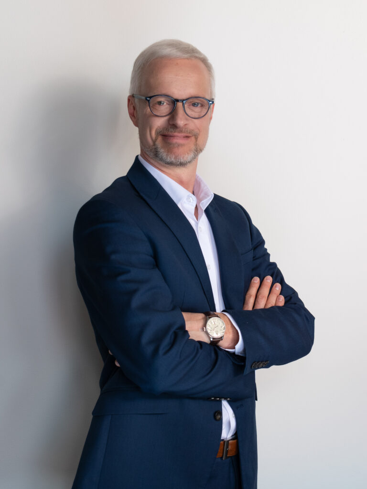

Lepší doprava a bezpečnost
Bezpečnější příjezd, pěší spojení k D4, lepší autobusy a bezpečnější pohyb v obci.
Chceme obec, která plánuje dopředu, odpovědně hospodaří, otevřeně komunikuje a dokáže spojovat lidi i rozdílné názory.
Bezpečnější příjezd, pěší spojení k D4, lepší autobusy a bezpečnější pohyb v obci.
Budoucnost MŠ, kapacita školy a dobré podmínky pro rodiny.
Rozhodnutí vysvětlená předem, dostupné informace a naslouchání občanům.
Transparentní plánované i skutečné náklady obecních investic.
Voda, kanalizace, ČOV, komunikace a vybavenost v souladu s růstem obce.
Méně osobních sporů, více argumentů, faktů, respektu a spolupráce.

Manažer a podnikatel se zkušeností s řízením firem, strategických projektů, týmů a dlouhodobého rozvoje.
Ivan Daněk je vlastníkem a CEO společnosti Innovan Pharma. Jeho profesní zkušenost zahrnuje strategii, business development, řízení portfolia, obchodní efektivitu a výzkum a vývoj. V letech 2016–2020 působil jako CEO PRO.MED.CS Praha a.s. a v letech 2013–2020 jako člen představenstva.
Nejsme jen jeden kandidát. Jsme tým devíti lidí s různými zkušenostmi, kteří chtějí spojit své schopnosti ve prospěch obce.
Kliknutím rozbalíte jednotlivé části programu a konkrétní kroky, které chceme prosazovat.
Program nechceme psát jen od stolu. Napište nám, co vám v Trnové chybí, co funguje špatně a co bychom naopak měli zachovat.
Napište nám Facebook